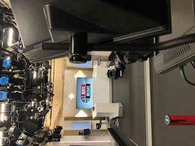
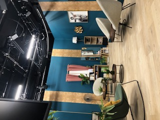

Exploration des Coulisses de la Télévision : Une Opportunité Unique pour les Étudiants
Février 2024
Au cours du mois de février 2024, les étudiants du BTS Communication et BTS Métiers de l'Audiovisuel ont eu le privilège de plonger dans l'univers de la télévision en visitant les studios de deux chaînes de renom : TV TOURS et Canal+.
Découverte de TV TOURS : Une Chaîne Locale au Fort Ancrage Régional
Une Immersion dans le Paysage Télévisuel Local à Tours.
La première étape de cette exploration les a conduits aux locaux de TV TOURS, une chaîne de télévision locale française en activité depuis 2006. Dotée d'un ancrage local solide, cette chaîne diffuse en continu une programmation diversifiée, couvrant tous les aspects de la vie locale, de l'information à la culture en passant par le sport, pour le plus grand bonheur de ses téléspectateurs de toutes générations.
 
Plongée dans l'Univers de Canal+ : Un Géant de l'Audiovisuel Français
Une Fenêtre Ouverte sur l'Audiovisuel National à Paris
La seconde partie de cette expérience a conduit nos étudiants à la découverte des coulisses de Canal+, un groupe audiovisuel majeur en France depuis sa création en 1984. Au sein de ce titan de l'industrie télévisuelle, les étudiants ont pu appréhender de près les enjeux et les défis de la création et de la diffusion de contenus, notamment à travers la diversité de ses chaînes thématiques.


Une Immersion Enrichissante et Inoubliable
Un Tremplin pour l'Avenir Professionnel
Cette immersion au cœur de l'industrie télévisuelle a offert aux étudiants une opportunité exceptionnelle de comprendre de l'intérieur le fonctionnement et les exigences du métier. Cette expérience précieuse contribuera sans aucun doute à enrichir leur parcours professionnel dans les métiers de la communication et de l'audiovisuel, en leur offrant un aperçu concret et inspirant de leur futur domaine d'activité.
üëâ Pour d√©couvrir le BTS Communication : Formations initiales
Formations en alternance à l'ISCB
üëâ Pour d√©couvrir le BTS MAV : Formations initiales
Formations en alternance à l'ISCB
üëâ Pour d√©couvrir nos autres formations d'enseignement sup√©rieur : Formations initiales
Formations en alternance à l'ISCB
Découvrir Notre Dame La Riche...

L'institution
Ancrée au centre de la ville de Tours, l’Institution Notre-Dame La Riche œuvre depuis des décennies à l’épanouissement des jeunes de la maternelle à l’enseignement supérieur...

Internat
Un cadre de vie et de travail en plein coeur de la ville de Tours dans lequel est privilégié l'apprentissage à l'autonomie et le vivre ensemble...

Une école hôtelière
L’école hôtelière de Notre Dame La Riche forme les étudiants, avec l'appui d'un restaurant pédagogique, dans trois filières de l’hôtellerie et de la restauration : la cuisine, le service et l’hébergement…